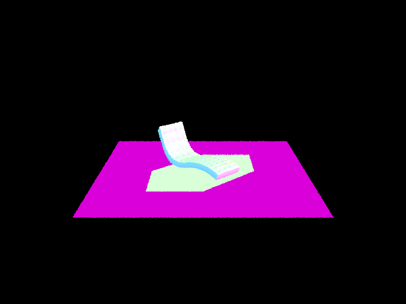
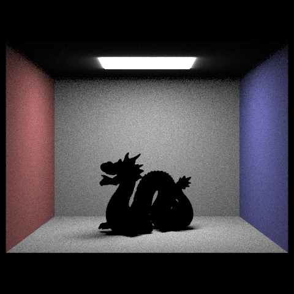

CS184/284A Spring 2025 Homework 3 Write-Up
Link to webpage: (TODO) cs184.eecs.berkeley.edu/sp25
Link to GitHub repository: (TODO) cs184.eecs.berkeley.edu/sp25
Overview
In HW3, I first implemented ray tracing and ray-triangle / ray-sphere intersection. Then I implemented bounding volume hierarchy (BVH) to accelerate ray tracing. Next, I implemented direct illumination with uniform and importance sampling. I also implemented global illumination with indirect lighting. Finally, I implemented adaptive sampling to dynamically adjust the number of samples per pixel based on convergence. It's been a challenging but rewarding experience to implement these features and see the results!Part 1: Ray Generation and Scene Intersection
1. Walk through the ray generation and primitive intersection parts of the rendering pipeline
Ray Generation
Here's the high-level overview of the ray generation process:
- We first transform the input coordinates to camera space by the following formula
camX = (2x - 1) * tan(hFov / 2)
camY = (2y - 1) * tan(vFov / 2) -
then transform the camera space coordinates to world space by the following formula
dirWorld = c2w * Vector3D(camX, camY, -1).unit() -
Finally, we create a ray object with the origin and direction, and set its near and far clipping planes with
nClipandfClip
Primitive Intersection
(1) triangle intersection: I mainly used moller-trumbore algorithm to calculate the intersection point of a ray and a triangle. (Which I will explain in the next section)
(2) Sphere intersection: I used quadratic equation to determince if a ray intersects with a sphere.
- We know Ray equation:
r(t) = o + t dand Sphere equation:(p - c)^2 = R^2 - Substitte Ray equation into Sphere equation, we get a quadratic equation:
(o + t d - c)^2 = R^2 - Then we solve the quadratic equation to get the intersection point:
t = (-b ± sqrt(b^2 - 4ac)) / (2a) - The ray intersects the sphere if
b^2 - 4ac ≥ 0and at least one oft1ort2lies in[min_t, max_t].
The normal is computed asn = ((o + t d) - c) / R.
2. Explain the triangle intersection algorithm you implemented in your own words
I basically implemented Moeller-Trumbore algorithm to calculate the intersection point of a ray and a triangle. I referenced this lecture slide:
- The goal is to solve
o + t d = (1 - b1 - b2) P0 + b1 P1 + b2 P2 - First, compute all relavant vectors:
E1 = P1 - P0,E2 = P2 - P0,S = o - P0,S1 = d x E2,S2 = S x E1 - Then, we solve for
t,b1, andb2by the following formulas:
t = S2 * E2 / (S1 * E1)
b1 = S1 * S / (S2 * E1)
b2 = S2 * S / (S1 * E1) - Finally, we check if the intersection is valid and create isect
3. Show images with normal shading for a few small .dae files.
Below is the images:

|

|

|

|
Part 2: Bounding Volume Hierarchy
1. Walk through your BVH construction algorithm. Explain the heuristic you chose for picking the splitting point.
- Firstly, I will compute the current bounding box by expanding on every primitives
- Base case: if it's leaf node, return it
- find the split value by averaging centroids of all primitives along the splitting axis (the one with largest extent)
- I used 2-pointers to find the mid value and I will recursively construct left and right subtrees
function construct_bvh(start, end, max_leaf_size): Compute bounding box of all primitives if (numPrimitives <= max_leaf_size): return leaf node axis = longest_extent_axis(bbox) splitValue = average_centroid(primitives, axis) // Two-pointer partitioning left, right = start, end - 1 while (left ≤ right): if (left centroid < splitValue): left++ if (right centroid ≥ splitValue): right-- if (left < right): swap(left, right) mid = partition point (ensure non-empty subgroups) return new BVHNode(construct_bvh(start, mid), construct_bvh(mid, end))
2. Show images with normal shading for a few large .dae files that you can only render with BVH acceleration.
Below is the images:
|
|
|
|
|
|
|
|
|
3. Compare rendering times on a few scenes with moderately complex geometries with and without BVH acceleration. Present your results in a one-paragraph analysis.
Here's the result:
| dae file | Render Time without BVH Acceleration | Render Time with BVH Acceleration | Speedup Factor |
|---|---|---|---|
| sky/dragon.dae | 207.7229 | 0.0347 | 5986.25 |
| sky/bench.dae | 106.4019 | 0.0251 | 4239.12 |
| sky/CBcoil.dae | 9.2574 | 0.0353 | 262.25 |
| meshedit/cow.dae | 6.7117 | 0.0317 | 211.73 |
From the table, we can see that BVH acceleration significantly reduces the rendering time for scenes with moderately complex geometries. The speedup factor ranges from 211.73 to 5986.25, showing a substantial improvement in rendering performance. The larger the scene, the greater the speedup factor,for example, the dragon.dae file has the highest speedup factor of 5986.25. But even for simpler scenes like cow.dae, BVH acceleration still provides a speedup factor of 211.73.
Part 3: Direct Illumination
1. Walk through both implementations of the direct lighting function
Direct Lighting - Uniform Sampling
I mainly referenced the lecture slide when implementing the direct lighting function with uniform sampling. Here's the high-level overview of the direct lighting function:
- Recall the rendering equation from Lecture:
\[ L_r(p, \omega_r) \approx \frac{1}{N} \sum_{j=1}^{N} \frac{f_r(p, \omega_j \to \omega_r) L_i(p, \omega_j) \cos(\theta_j)}{p(\omega_j)} \]
- I'll loop through all samples. For each sample, we use
get_sample()to getwi - Then, we generate next ray from
hit_ptowardwiWorldand check if it reaches a light source. - If unblocked, calculate all required terms in the rendering equation and accumulate the radiance.
- Finally, we average
L_outovernum_samplesfor the final estimate.
Direct Lighting - Importance Sampling
I also referenced the lecture slide when implementing this method:
- We loop through each light and determine
num_samplesbased on whether it is a point light or area light. Point light hasnum_sample = 1, otherwisenum_sample = ns_area_light - For each light, we loop through all samples: we generate the next ray from
hit_ptowardwi - If no intersection occurs, the light is visible and contributes to
L_out. We use the rendering equation to compute the current radiance. - Finally, we normalize
L_out
2. Show some images rendered with both implementations of the direct lighting function
Below are images rendered using both Uniform Sampling and Importance Sampling for comparison:
| Object | Uniform Sampling | Importance Sampling |
|---|---|---|
| CBbunny | ||
| CBdragon |  | |
| CBempty | ||
| CBgems | ||
| CBlucy |
3. Focus on one particular scene with at least one area light and compare the noise levels in soft shadows when rendering with 1, 4, 16, and 64 light rays (the -l flag) and with 1 sample per pixel (the -s flag) using light sampling, not uniform hemisphere sampling.
|
|
|
|
|
|
From the comparison, we found that the noise level decreses as the number of light rays increases. In Monte Carlo integration, the noise level is proportional to the inverse square root of the number of samples. Therefore, the noise level decreases as the number of samples increases.
4. Compare the results between uniform hemisphere sampling and lighting sampling in a one-paragraph analysis. Importance sampling produces more accurate and less noisy results than uniform hemisphere sampling, as it focuses on sampling rays from light sources, reducing variance. Uniform sampling, in contrast, may struggle in scenes with small or distant lights, leading to darker, noisier images. However, importance sampling is more complex to implement since it depends on light source properties, whereas uniform sampling is simpler but less efficient.
Part 4: Global Illumination
1. Walk through your implementation of the indirect lighting function
I mainly referenced the pseudocode from lecture:
- First, calculate direct radiance by calling
one_bounce_radiancefunction - Direct light is added to
L_outifisAccumBouncesistrueand ray depth remains. - We sample an indirect bounce direction by
sample_f - Russian Roulette: we use a a termination probability of
0.3to prevent infinite recursion. - If not terminate, we generate next Ray and check is there's intersection, if it is, we will recursively call
at_least_one_bounce_radiance(nextRay, nextIsect) - Accumulates indirect radiance contribution with the following formula:
\[ L_{\text{out}} += \frac{L \cdot f_r \cdot \cos(\theta)}{\text{pdf} \times \text{continuation probability}} \]
2. Show some images rendered with global (direct and indirect) illumination. Use 1024 samples per pixel
Here are the images:
|
|
|
|
|
|
3. Pick one scene and compare rendered views first with only direct illumination, then only indirect illumination. Use 1024 samples per pixel
Direct Lighting

Indirect Lighting
4. For CBbunny.dae, render the mth bounce of light with max_ray_depth set to 0, 1, 2, 3, 4, and 5 (the -m flag), and isAccumBounces=false. Explain in your write-up what you see for the 2nd and 3rd bounce of light, and how it contributes to the quality of the rendered image compared to rasterization. Use 1024 samples per pixel.
| Max Ray Depth | Unaccumulated Bounces | Accumulated Bounces |
|---|---|---|
| 0 | ||
| 1 | ||
| 2 | ||
| 3 | ||
| 4 | ||
| 5 |
5. For CBbunny.dae, output the Russian Roulette rendering with max_ray_depth set to 0, 1, 2, 3, 4, and 100(the -m flag). Use 1024 samples per pixel.
|
|
|
|
|
|
|
|
|
6. Pick one scene and compare rendered views with various sample-per-pixel rates, including at least 1, 2, 4, 8, 16, 64, and 1024. Use 4 light rays.
I chose sky/CBspheres_lambertian.dae for the comparison. Below are the images:
|
|

|
|
|
|
|
|
|
|
|
Part 5: Adaptive Sampling
2. Explain adaptive sampling. Walk through your implementation of the adaptive sampling.
Adaptive sampling is an optimization technique to dynamically adjust the number of samples per pixel based on convergence. Instead of using a fixed number of samples for all pixels, adaptive sampling allows us to terminate early for pixels that have already converged to a stable value and focus on the samples in the more difficult part of the image, thereby improving efficiency without sacrificing image quality.
Here's the high-level overview of my implementation. In addition to the implementation of
raytrace_pixel function from Part 1, I mainly added 3 more things:
-
Check if the pixel is converged by the formula:
I = 1.96 × (σ / √n), where
- n is the number of samples taken for the pixel (i in my code).
- μ = s1 / n
- σ² = (1 / (n - 1)) × (s2 - (s1 × s1) / n)
- σ = sqrt(σ²)
-
If the pixel is converged, the loop will break, and I will normalize the radiance by
iafter the break. -
I will update
sampleCountBufferwith the actual number of samples per pixel (i), which will result in the final sampling rate image.
2. Pick two scenes and render them with at least 2048 samples per pixel. Show a good sampling rate image with clearly visible differences in sampling rate over various regions and pixels.
Include both your sample rate image, which shows your how your adaptive sampling changes depending on which part of the image you are rendering, and your noise-free rendered result.
Use 1 sample per light and at least 5 for max ray depth.
Here are the images:
|
|
|
|
|
|